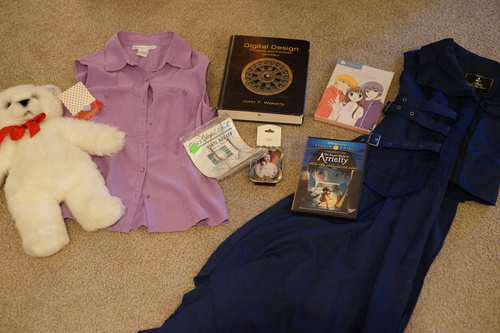

i swear to mother SD, if no one emails me to say "wow hat, i clicked the bee! you are so cool hat! thank you!!" im going to make the bee the off button. i added 4 new precious things and also some photos to hina's gallery
don't forget its white day tomorrow!! im very excited!
i finished gosick vol 1. it was a really quick read since the writing is so easy. it definitely wont be winning any awards. in the novel, Victorique has a raspy smoker voice and ACTUALLY smokes a pipe instead of just holding it. i understand why they didnt keep those in the anime... i wont be buying vol 2 due to its mega price. its definitely not worth $150
i finished my zurückspulen rewatch. its not as cute as the original series, but i like it. it definitely requires you to watch the original show first so i was a dummy for watching it first many years ago. theres a lot of alternate universe time travel sh*t going on which isnt good. i need to rewatch the original show
thrift store haul 3/12
cute!!
i bought it for a plate ryan wanted to hang on the wall and it was too small ;_;
i got away with not buying most textbooks in college so i dont have anything to reference! this one is a little dated but so am i.
guess i don't have to borrow my sister's now
i misread the confusing tag as a JP XS and put it on and found it much more roomy than expected. its actually a jp xl and their bubble tag is stupid. i cant even imagine a time when it would be appropriate to wear this